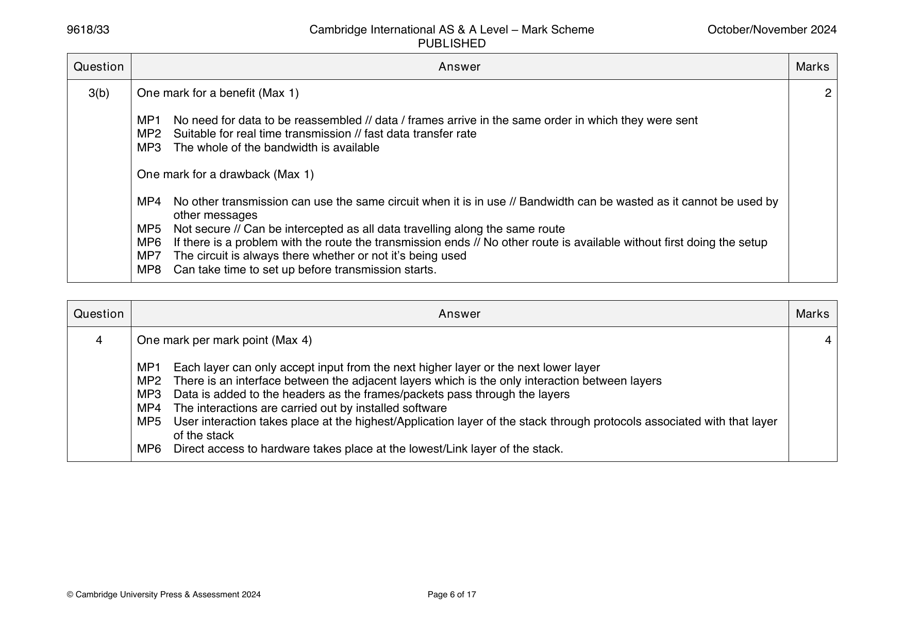
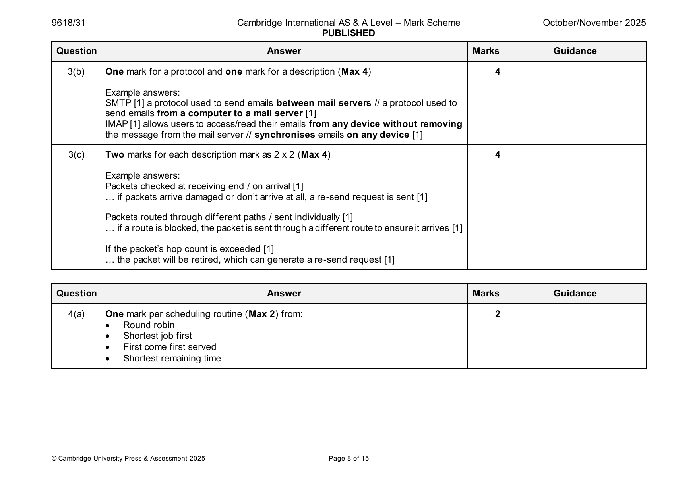
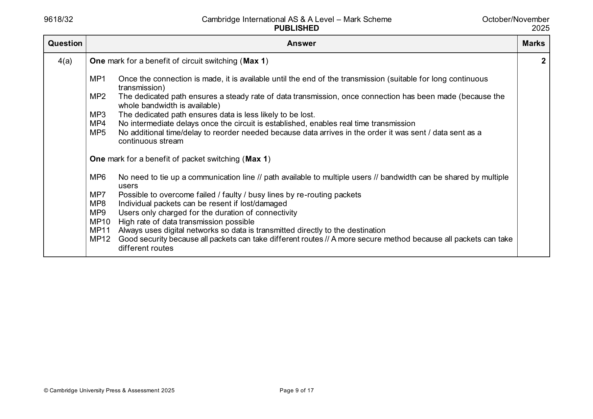
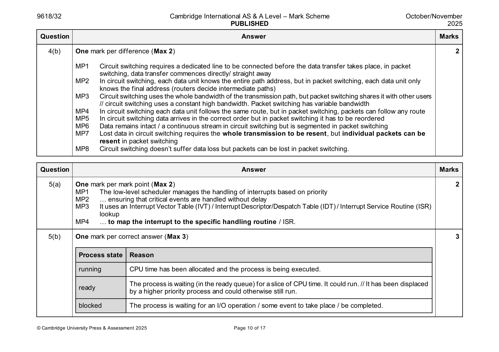

9618-2021-mj-31-q06
May/June 2021 · Paper 31 · Question 6 · 4 marks
6 One mark for each correct benefit (Max 2) 4
• Accuracy – Ensures accurate delivery of the message
• Completeness – Missing packets can be easily detected and a re-send
request sent so the message arrives complete
• Resilience – if a network changes the router can detect this and send
the data another way to ensure it arrives
• Path also available to other users // Doesn’t use whole bandwidth //
allows simultaneous use of channel by multiple users
• Better security as packets hashed and sent by different routes.
One mark for each correct drawback (Max 2)
• Time delays to correct errors // Network problems may introduce errors
in packets
• Requires complex protocols for delivery
• Unsuitable for real time transmission applications
© UCLES 2021 Page 7 of 10
Official mark scheme pages: 7 · source PDF URL
9618-2021-mj-32-q06
May/June 2021 · Paper 32 · Question 6 · 4 marks
6 One mark for each correct benefit (Max 2) 4
• Accuracy – Ensures accurate delivery of the message
• Completeness – Missing packets can be easily detected and a re-send
request sent so the message arrives complete
• Resilience – if a network changes the router can detect this and send
the data another way to ensure it arrives
• Path also available to other users // Doesn’t use whole bandwidth //
allows simultaneous use of channel by multiple users
• Better security as packets hashed and sent by different routes.
One mark for each correct drawback (Max 2)
• Time delays to correct errors // Network problems may introduce errors
in packets
• Requires complex protocols for delivery
• Unsuitable for real time transmission applications
© UCLES 2021 Page 7 of 10
Official mark scheme pages: 7 · source PDF URL
9618-2021-mj-33-q06
May/June 2021 · Paper 33 · Question 6 · 4 marks
6 One mark for each correct benefit (Max 2) 4
• Accuracy – Ensures accurate delivery of the message
• Completeness – Missing packets can be easily detected and a re-send
request sent so the message arrives complete
• Resilience – if a network changes the router can detect this and send
the data another way to ensure it arrives
• Path also available to other users // Doesn’t use whole bandwidth //
allows simultaneous use of channel by multiple users
• Better security as packets hashed and sent by different routes.
One mark for each correct drawback (Max 2)
• Time delays to correct errors // Network problems may introduce errors
in packets
• Requires complex protocols for delivery
• Unsuitable for real time transmission applications
© UCLES 2021 Page 7 of 10
Official mark scheme pages: 7 · source PDF URL
9618-2021-on-31-q06
Oct/Nov 2021 · Paper 31 · Question 6 · 8 marks
6(a) One mark for each correct marking point (Max 5) 5
• A large message is divided up into a group of smaller chunks of the same
size called packets
• The packet has a header and a payload
• The header contains a source IP address, destination IP address (and
sequence number)
• Each packet is dispatched independently
• … and may travel along different routes / paths
• The packets may arrive out of order
• … and are reassembled into the original message at the destination
• If packets are missing / corrupted a re-transmission request is sent.
6(b) One mark for each correct marking point (Max 3) 3
• The router examines the packet’s header
• It reads the IP address of the destination (from the packet header)
• A router has access to a routing table
• …containing information about, e.g., available hops / netmask / gateway
used
• … and the status of the routes along the route
• … the router decides on the next hop / best route
• … and sends the packet on its next hop.
© UCLES 2021 Page 6 of 10
Official mark scheme pages: 6 · source PDF URL
9618-2021-on-32-q06
Oct/Nov 2021 · Paper 32 · Question 6 · 8 marks
6(a) One mark for each correct marking point (Max 5) 5
• A large message is divided up into a group of smaller chunks of the same
size called packets
• The packet has a header and a payload
• The header contains a source IP address, destination IP address (and
sequence number)
• Each packet is dispatched independently
• … and may travel along different routes / paths
• The packets may arrive out of order
• … and are reassembled into the original message at the destination
• If packets are missing / corrupted a re-transmission request is sent.
6(b) One mark for each correct marking point (Max 3) 3
• The router examines the packet’s header
• It reads the IP address of the destination (from the packet header)
• A router has access to a routing table
• …containing information about, e.g., available hops / netmask / gateway
used
• … and the status of the routes along the route
• … the router decides on the next hop / best route
• … and sends the packet on its next hop.
© UCLES 2021 Page 6 of 10
Official mark scheme pages: 6 · source PDF URL
9618-2022-mj-31-q03
May/June 2022 · Paper 31 · Question 3 · 8 marks
3 Circuit switching max four marks 8
Any two from
a dedicated circuit
circuit is established before transmission starts //
circuit is released after transmission ends
data is transferred using the whole bandwidth
all data is transferred over the same route
Two from
Advantage – data /frames arrive in order and do not need to be reassembled
Disadvantage – nobody else can use the same circuit even if it is idle //less secure as only one route used
Packet switching max four marks
Any two from
data is split into packets
each packet is given its own route
the routing for a packet depends on the congestion
packets may not arrive in the order sent
Two from
Advantage – packets can be rerouted if there are problems// more secure as harder to intercept messages
Disadvantage – time taken to reassemble packets at the destination
© UCLES 2022 Page 5 of 11
Official mark scheme pages: 5 · source PDF URL
9618-2022-mj-32-q03
May/June 2022 · Paper 32 · Question 3 · 8 marks
3(a) Protocol one mark, description one mark, max four 4
Any two from
HTTP(S) (1) for sending and receiving web pages / hypertext documents (1)
FTP (1) for sending and receiving files over a network / between devices (1)
SMTP (1) for sending/uploading emails /push protocol (1)
POP(3) (1) for receiving/downloading emails /pull protocol (1)
IMAP (1) for receiving/downloading emails /pull protocol (1)
3(b) Layer one mark, matching function one mark, max four 4
Any two from
Transport (1) handles packets (1)
Internet (1) handles transmission of data using
IP addresses // provides (optimal) route (1)
Network Access (Interface) // (Data) Link // Physical (1) Handles how data is physically sent (1)
Question Answer Marks
Official mark scheme pages: 5 · source PDF URL
9618-2022-mj-33-q03
May/June 2022 · Paper 33 · Question 3 · 8 marks
3 Circuit switching max four marks 8
Any two from
a dedicated circuit
circuit is established before transmission starts //
circuit is released after transmission ends
data is transferred using the whole bandwidth
all data is transferred over the same route
Two from
Advantage – data /frames arrive in order and do not need to be reassembled
Disadvantage – nobody else can use the same circuit even if it is idle //less secure as only one route used
Packet switching max four marks
Any two from
data is split into packets
each packet is given its own route
the routing for a packet depends on the congestion
packets may not arrive in the order sent
Two from
Advantage – packets can be rerouted if there are problems// more secure as harder to intercept messages
Disadvantage – time taken to reassemble packets at the destination
© UCLES 2022 Page 5 of 11
Official mark scheme pages: 5 · source PDF URL
9618-2022-on-31-q02
Oct/Nov 2022 · Paper 31 · Question 2 · 5 marks
2 One mark for each point (Max 3) 5
MP1 The Transport Layer breaks data into manageable packets / performs segmentation
MP2 It sequences the packets // adds data to the packet header // adds a packet header
MP3 It sends the packets to the Internet / Network Layer // It receives data from the Application Layer
MP4 It controls the flow of packets
MP5 It handles packet loss/corruption // Acknowledges receipt of complete error free packets
One mark for each point (Max 3)
MP6 The Internet Layer identifies the intended network and host
MP7 It transmits packets to the (Data) Link / Physical Layer
MP8 It routes the packets independently through the optimum route
MP9 It addresses packets with their source and destination IP addresses
MP10 It then uses an IP address and port number to form a socket.
Question Answer Marks
Official mark scheme pages: 5 · source PDF URL
9618-2022-on-32-q03
Oct/Nov 2022 · Paper 32 · Question 3 · 6 marks
3(a) One mark per point (Max 2) 2
• Protocols set a standard for communication
• Protocols enable communication/compatibility between devices from different manufacturers/platforms
• If two devices were sending messages to each other but using different protocols, they would not be able to
communicate properly
3(b) One mark for each correct answer 2
Application (Layer)
Transport
Internet/Network (Layer)
Link
3(c) One mark per point (Max 2) 2
• used by email clients to retrieve email messages // a pull protocol
• from a mail server (over a TCP/IP connection)
• keeps the server and client in sync (by not deleting the original email). // allows a copy of the email to be downloaded
from the mail server.
© UCLES 2022 Page 5 of 16
Official mark scheme pages: 5 · source PDF URL
9618-2022-on-33-q02
Oct/Nov 2022 · Paper 33 · Question 2 · 5 marks
2 One mark for each point (Max 3) 5
MP1 The Transport Layer breaks data into manageable packets / performs segmentation
MP2 It sequences the packets // adds data to the packet header // adds a packet header
MP3 It sends the packets to the Internet / Network Layer // It receives data from the Application Layer
MP4 It controls the flow of packets
MP5 It handles packet loss/corruption // Acknowledges receipt of complete error free packets
One mark for each point (Max 3)
MP6 The Internet Layer identifies the intended network and host
MP7 It transmits packets to the (Data) Link / Physical Layer
MP8 It routes the packets independently through the optimum route
MP9 It addresses packets with their source and destination IP addresses
MP10 It then uses an IP address and port number to form a socket.
Question Answer Marks
Official mark scheme pages: 5 · source PDF URL
9618-2023-mj-31-q05
May/June 2023 · Paper 31 · Question 5 · 6 marks
5(a) One mark per mark point (Max 2) 2
Circuit switching is used where a dedicated path needs to be sustained
throughout the call / communication // where the whole bandwidth is
required // where a real time communication is used.
A typical application is standard voice communications / video streaming /
private data networks
5(b) One mark per benefit (Max 2) 4
MP1 Whole of bandwidth is available
MP2 Dedicated communication channel increases the quality of transmission
MP3 Data is transmitted with a fixed data rate
MP4 No waiting time at switches
MP5 Suitable for long continuous communication
MP6 Fast method of data transfer
MP7 Data arrives in the same order as it was sent
MP8 Data can’t get lost
MP9 Data all follows the same path / route
MP10 Better for real-time
MP11 Simple method of data transfer.
One mark per drawback (Max 2)
MP1 A dedicated connection makes it impossible to transmit other data even
if the channel is free
MP2 Not very flexible
MP3 No alternative route in case of failure
MP4 The time required to establish the physical link between the two stations
can be too long
MP5 The need to establish a dedicated path for each connection can have
cost implications
MP6 Dedicated channels require the whole bandwidth / bandwidth can’t be
shared
Question Answer Marks
Official mark scheme pages: 5 · source PDF URL
9618-2023-mj-32-q07
May/June 2023 · Paper 32 · Question 7 · 6 marks


7(a) One mark per mark point (Max 2) 2
MP1 Packet switching is most commonly used on data networks such as
the internet to send large data files that don’t need to be live streamed
MP2 Packet switching is used when it is necessary to be able to overcome
failed/faulty lines by rerouting.
MP3 Packet switching is used when it is necessary for the communication
to be more secure.
MP4 Packet switching is used for high volume data transmission.
MP5 Packet switching is used when it isn’t necessary to use all the
bandwidth.
MP6 Specific examples e.g. email, text messages, documents, VOIP etc.
(up to two marks).
© UCLES 2023 Page 7 of 12
7(b) One mark per mark point (Max 4) 4
MP1 Circuit switching uses a dedicated channel to make communication,
whereas packet switching forms data into packets to transmit over a
digital network.
MP2 The dedicated path for circuit switching must be established before
the transfer of data can commence, which is not the case with packet
switching (as it doesn’t require a dedicated path).
MP3 Data in packet switching is split into packets, in circuit switching the
message remains intact.
MP4 All of the transmission in circuit switching follows the same path
whereas different packets in packet switching can take different
routes.
MP5 The message is received in the same order in which it is sent with
circuit switching, but with packet switching, the packets can be
received out of order (for assembly at the destination).
MP6 Circuit switching is implemented at the physical layer while packet
switching is implemented at the network layer.
MP7 Circuit switching uses the whole bandwidth of the channel used,
packet switching can share bandwidth.
MP8 Circuit switching communication ends with an error but packet
switching allows packets to be re-sent.
MP9 Circuit switching is a simpler process than packet switching.
Question Answer Marks
Official mark scheme pages: 7, 8 · source PDF URL
9618-2023-mj-33-q05
May/June 2023 · Paper 33 · Question 5 · 6 marks
5(a) One mark per mark point (Max 2) 2
Circuit switching is used where a dedicated path needs to be sustained
throughout the call / communication // where the whole bandwidth is
required // where a real time communication is used.
A typical application is standard voice communications / video streaming /
private data networks
5(b) One mark per benefit (Max 2) 4
MP1 Whole of bandwidth is available
MP2 Dedicated communication channel increases the quality of transmission
MP3 Data is transmitted with a fixed data rate
MP4 No waiting time at switches
MP5 Suitable for long continuous communication
MP6 Fast method of data transfer
MP7 Data arrives in the same order as it was sent
MP8 Data can’t get lost
MP9 Data all follows the same path / route
MP10 Better for real-time
MP11 Simple method of data transfer.
One mark per drawback (Max 2)
MP1 A dedicated connection makes it impossible to transmit other data even
if the channel is free
MP2 Not very flexible
MP3 No alternative route in case of failure
MP4 The time required to establish the physical link between the two stations
can be too long
MP5 The need to establish a dedicated path for each connection can have
cost implications
MP6 Dedicated channels require the whole bandwidth / bandwidth can’t be
shared
Question Answer Marks
Official mark scheme pages: 5 · source PDF URL
9618-2023-on-31-q02
Oct/Nov 2023 · Paper 31 · Question 2 · 6 marks
2(a) One mark for each correct line connecting a protocol to its most appropriate 4
description (Max 4).
Protocol Use
to provide peer-to-peer file sharing
HTTP
when retrieving email messages from a
mail server over a TCP/IP connection
BitTorrent
when transmitting hypertext
documents
SMTP
to map MAC addresses onto IP
addresses
IMAP
when sending email messages
towards the intended destination
2(b) One mark per mark point (Max 2) 2
MP1 To ensure correct network protocols are followed
MP2 To enable the upper layers to access the physical medium //
enables connection/ communication with the internet / network layer
MP3 To be responsible for transporting data within the network/local
segments
MP4 To format the data into frames for transmission
MP5 Maps IP addresses to MAC/Physical addresses.
© UCLES 2023 Page 3 of 9
Official mark scheme pages: 3 · source PDF URL
9618-2023-on-32-q04
Oct/Nov 2023 · Paper 32 · Question 4 · 3 marks
4 One mark for each correct word (Max 3) 3
The protocols in a stack determine the interconnectivity rules for a layered
network model such as the TCP/IP model.
Question Answer Marks
Official mark scheme pages: 4 · source PDF URL
9618-2023-on-33-q02
Oct/Nov 2023 · Paper 33 · Question 2 · 6 marks
2(a) One mark for each correct line connecting a protocol to its most appropriate 4
description (Max 4).
Protocol Use
to provide peer-to-peer file sharing
HTTP
when retrieving email messages from a
mail server over a TCP/IP connection
BitTorrent
when transmitting hypertext
documents
SMTP
to map MAC addresses onto IP
addresses
IMAP
when sending email messages
towards the intended destination
2(b) One mark per mark point (Max 2) 2
MP1 To ensure correct network protocols are followed
MP2 To enable the upper layers to access the physical medium //
enables connection/ communication with the internet / network layer
MP3 To be responsible for transporting data within the network/local
segments
MP4 To format the data into frames for transmission
MP5 Maps IP addresses to MAC/Physical addresses.
© UCLES 2023 Page 3 of 9
Official mark scheme pages: 3 · source PDF URL
9618-2024-mj-31-q02
May/June 2024 · Paper 31 · Question 2 · 6 marks
2(a) Two marks for all protocols in correct position 2
One mark for at least two protocols in correct position
Application
Transport
Internet
Link
2(b) One mark per mark point (Max 2) 2
MP1 The transport layer is responsible for delivery of data from the source host to the destination host
MP2 It is where data is broken up into packets and sent to the internet layer
MP3 Adds the sequence number to the packet header
MP4 It establishes end to end contact
MP5 It ensures data arrives error free // It retransmits packets if lost.
2(c) One mark for name of protocol and one mark for expansion (Max 2) 2
HTTP(S) – responsible for correct transfer of files / hypertext documents that make up web pages on the world wide web
FTP – used when transferring files from a server to a client on a network
POP3 – handles the receiving of emails
IMAP – handles the receiving of emails
SMTP – handles the sending of emails
BitTorrent – provides peer-to-peer file sharing
© Cambridge University Press & Assessment 2024 Page 5 of 14
Official mark scheme pages: 5 · source PDF URL
9618-2024-mj-32-q02
May/June 2024 · Paper 32 · Question 2 · 7 marks
2(a) One mark per mark point (Max 2) 2
MP1 Protocols provide a standard set of rules that enables successful data transfer between devices.
MP2 Allows communication between devices on different platforms.
MP3 Makes communications independent of software and hardware.
2(b) One mark per mark point 2
MP1 Sending - SMTP
MP2 Receiving – POP3 // IMAP // Post Office Protocol 3
2(c) One mark per mark point (Max 3) 3
MP1 BitTorrent allows the sharing of files between thousands of users who are connected together over the internet.
MP2 It allows more users to share files with each other than would be the case with a peer-to-peer network.
MP3 Users share files directly with each other // the users’ computers are acting as peers
MP4 … no web server / central device is used // all users are of equal status.
© Cambridge University Press & Assessment 2024 Page 4 of 14
Official mark scheme pages: 4 · source PDF URL
9618-2024-mj-33-q02
May/June 2024 · Paper 33 · Question 2 · 6 marks
2(a) Two marks for all protocols in correct position 2
One mark for at least two protocols in correct position
Application
Transport
Internet
Link
2(b) One mark per mark point (Max 2) 2
MP1 The transport layer is responsible for delivery of data from the source host to the destination host
MP2 It is where data is broken up into packets and sent to the internet layer
MP3 Adds the sequence number to the packet header
MP4 It establishes end to end contact
MP5 It ensures data arrives error free // It retransmits packets if lost.
2(c) One mark for name of protocol and one mark for expansion (Max 2) 2
HTTP(S) – responsible for correct transfer of files / hypertext documents that make up web pages on the world wide web
FTP – used when transferring files from a server to a client on a network
POP3 – handles the receiving of emails
IMAP – handles the receiving of emails
SMTP – handles the sending of emails
BitTorrent – provides peer-to-peer file sharing
© Cambridge University Press & Assessment 2024 Page 5 of 14
Official mark scheme pages: 5 · source PDF URL
9618-2024-on-31-q03
Oct/Nov 2024 · Paper 31 · Question 3 · 5 marks

3(a) One mark per mark point (Max 3) 3
MP1 A dedicated circuit / channel is required
MP2 The circuit is established before the transmission begins
MP3 The circuit lasts for the whole of the transmission // The circuit is closed at the end of the transmission
MP4 Data travels in a continuous stream along the same route
MP5 Transmission is usually bidirectional.
© Cambridge University Press & Assessment 2024 Page 5 of 17
3(b) One mark for a benefit (Max 1) 2
MP1 No need for data to be reassembled // data / frames arrive in the same order in which they were sent
MP2 Suitable for real time transmission // fast data transfer rate
MP3 The whole of the bandwidth is available
One mark for a drawback (Max 1)
MP4 No other transmission can use the same circuit when it is in use // Bandwidth can be wasted as it cannot be used by
other messages
MP5 Not secure // Can be intercepted as all data travelling along the same route
MP6 If there is a problem with the route the transmission ends // No other route is available without first doing the setup
MP7 The circuit is always there whether or not it’s being used
MP8 Can take time to set up before transmission starts.
Question Answer Marks
Official mark scheme pages: 5, 6 · source PDF URL
9618-2024-on-31-q04
Oct/Nov 2024 · Paper 31 · Question 4 · 4 marks
4 One mark per mark point (Max 4) 4
MP1 Each layer can only accept input from the next higher layer or the next lower layer
MP2 There is an interface between the adjacent layers which is the only interaction between layers
MP3 Data is added to the headers as the frames/packets pass through the layers
MP4 The interactions are carried out by installed software
MP5 User interaction takes place at the highest/Application layer of the stack through protocols associated with that layer
of the stack
MP6 Direct access to hardware takes place at the lowest/Link layer of the stack.
© Cambridge University Press & Assessment 2024 Page 6 of 17
Official mark scheme pages: 6 · source PDF URL
9618-2024-on-32-q01
Oct/Nov 2024 · Paper 32 · Question 1 · 7 marks
1(a) One mark per mark point (Max 3) 3
MP1 The data to be transmitted is divided into equal sized packets
MP2 A packet header is attached to each packet containing key information
MP3 … such as source/destination IP addresses, packet number, etc
MP4 Packets are transmitted independently
MP5 … and may travel though different routes/paths to the destination
MP6 Routes are determined using a routing table//Packets take the optimum route depending on congestion
MP7 The packets usually arrive out of order
MP8 The packets are reassembled in the correct order at the destination // The packets are re-ordered using the
sequence number/the header
MP9 If packets are missing/corrupted a re-transmission request is sent / packets are re-sent.
1(b) One mark for each benefit (Max 2) 4
MP1 Packets are more likely to arrive because they can be re-routed if a problem occurs with one of the routes//Packets
are more likely to arrive because if a packet is lost, it can be re-transmitted
MP2 Bandwidth can be shared allowing packets from different messages to share the same path
MP3 Considered secure as the packets generally travel via different routes
MP4 High data transmission rate is possible
One mark for each drawback (Max 2)
MP5 Time delay because packets need to be re-ordered/reassembled at the destination//Time delay caused by missing
packets needing to be re-sent//Time delay because it has to share the bandwidth of the circuit / channel with
other packets
MP6 Requires a complex algorithm to function
MP7 Needs lots of RAM to handle large amounts of data.
© Cambridge University Press & Assessment 2024 Page 4 of 15
Official mark scheme pages: 4 · source PDF URL
9618-2024-on-32-q05
Oct/Nov 2024 · Paper 32 · Question 5 · 7 marks
5(a) One mark for each correct name (Max 2) 4
One mark for each correct corresponding expansion (Max 2)
MP1 HTTP/HTTPS
MP2 For sending and receiving / transferring web pages / hypertext
MP3 FTP
MP4 For sending and receiving files over a network / between devices
MP5 POP3
MP6 Pull protocol / for receiving / downloading emails
MP7 IMAP
MP8 Pull protocol / for receiving / downloading emails
MP9 SMTP
MP10 Push protocol / for sending / uploading emails
MP11 BitTorrent
MP12 Peer-to-peer file sharing over a network
5(b) One mark per mark point (Max 3) 3
MP1 The application layer provides access to all the programs that exchange data // Interacts directly with user.
MP2 … used by, for example, web browsers, server software.
MP3 Communicates/enables data transfer to/from Transport layer // It allows applications to access the services used in
other TCP/IP layers.
MP4 It defines the protocols that any application uses to allow the exchange of data.
© Cambridge University Press & Assessment 2024 Page 7 of 15
Official mark scheme pages: 7 · source PDF URL
9618-2024-on-33-q03
Oct/Nov 2024 · Paper 33 · Question 3 · 5 marks


3(a) One mark per mark point (Max 3) 3
MP1 A dedicated circuit / channel is required
MP2 The circuit is established before the transmission begins
MP3 The circuit lasts for the whole of the transmission // The circuit is closed at the end of the transmission
MP4 Data travels in a continuous stream along the same route
MP5 Transmission is usually bidirectional.
© Cambridge University Press & Assessment 2024 Page 5 of 17
3(b) One mark for a benefit (Max 1) 2
MP1 No need for data to be reassembled // data / frames arrive in the same order in which they were sent
MP2 Suitable for real time transmission // fast data transfer rate
MP3 The whole of the bandwidth is available
One mark for a drawback (Max 1)
MP4 No other transmission can use the same circuit when it is in use // Bandwidth can be wasted as it cannot be used by
other messages
MP5 Not secure // Can be intercepted as all data travelling along the same route
MP6 If there is a problem with the route the transmission ends // No other route is available without first doing the setup
MP7 The circuit is always there whether or not it’s being used
MP8 Can take time to set up before transmission starts.
Question Answer Marks
Official mark scheme pages: 5, 6 · source PDF URL
9618-2024-on-33-q04
Oct/Nov 2024 · Paper 33 · Question 4 · 4 marks
4 One mark per mark point (Max 4) 4
MP1 Each layer can only accept input from the next higher layer or the next lower layer
MP2 There is an interface between the adjacent layers which is the only interaction between layers
MP3 Data is added to the headers as the frames/packets pass through the layers
MP4 The interactions are carried out by installed software
MP5 User interaction takes place at the highest/Application layer of the stack through protocols associated with that layer
of the stack
MP6 Direct access to hardware takes place at the lowest/Link layer of the stack.
© Cambridge University Press & Assessment 2024 Page 6 of 17
Official mark scheme pages: 6 · source PDF URL
9618-2025-mj-31-q03
May/June 2025 · Paper 31 · Question 3 · 9 marks
3(a) One mark per mark point (Max 5) 5
One mark per mark point for purpose of Application Layer (Max 3)
MP1 To provide services / interface with the user // access to applications, for example login, file transfer, network file
access, email, etc
MP2 To provide mechanisms for securing communication e.g. encryption/authentication
MP3 To define/provide protocols used to allow the exchange of data/communication // to contain programs that
exchange data
MP4 Error detection and recovery mechanisms to handle application specific errors
One mark per mark point for purpose of Transport Layer (Max 3)
MP5 To provide logical communication between applications running on different hosts // To ensure that data is
delivered to the correct application process on the destination machine
MP6 To ensure error-free, end-to-end delivery of data between a source and a destination, in sequence // to provide
error recovery techniques such as error detection codes and automatic repeat request
MP7 To break data into segments when sent and to reconstruct when received // To reassemble segments at
destination
MP8 To regulate network connections // to provide flow control mechanisms to prevent data loss.
3(b) One mark per mark point (Max 4) 4
MP1 Data are broken into equal sized packets
MP2 Data packets have headers containing information such as the IP addresses of the sender and receiver
MP3 Each packet of data is sent independently to the destination // Packets don’t necessarily follow the same route
MP4 Each packet is sent via the most optimum path available
MP5 Packets don’t necessarily arrive in the order they were sent // Packets are reconstructed at the destination in the
correct order
MP6 Missing / damaged packets are re-sent
© Cambridge University Press & Assessment 2025 Page 8 of 15
Official mark scheme pages: 8 · source PDF URL
9618-2025-mj-32-q03
May/June 2025 · Paper 32 · Question 3 · 5 marks
3(a) Two from 1
• Application Layer
• Transport Layer
• Internet Layer
• Link Layer
3(b) One mark per mark point (Max 4) 4
MP1 The TCP/IP suite can be viewed as layers within a stack
MP2 Each layer can only accept input from the next higher or the next
lower layer/adjacent layer
MP3 The user/sender/computer interfaces with the top layer/application
layer to send/receive a message
MP4 The message when sent passes from the top layer/application layer
to the bottom layer/link layer
MP5 The message when received passes from bottom layer/link layer to
the top layer/application layer
MP6 The link layer interfaces directly with the network and sends/receives
the message.
© Cambridge University Press & Assessment 2025 Page 5 of 12
Official mark scheme pages: 5 · source PDF URL
9618-2025-mj-32-q04
May/June 2025 · Paper 32 · Question 4 · 4 marks
4 One mark for each benefit (Max 2) 4
MP1 Suitable for long continuous transmission once the connection is
made, it is available until the end of the transmission
MP2 No time lost in resending/rearranging packets as no loss of packets
or out of order packets
MP3 Steady/high rate of transmission because the whole of the bandwidth
is available
MP4 Data loss unlikely as all data follows the same path
One mark for each drawback (Max 2)
MP5 Delays due to dedicated connection required to be set up/established
before transmission can begin
MP6 The dedicated connection cannot be used to transmit any other data
MP7 System resources may be underutilised/inefficient/not very flexible
because the bandwidth can’t be shared/high bandwidth is required //
Bandwidth may be wasted // May send empty frames // the circuit is always
there whether or not used
MP8 There are no alternative routes if there is a failure or fault on the line
MP9 Reduced security due to use of single path
MP10 Scalability is difficult
Question Answer Marks
Official mark scheme pages: 6 · source PDF URL
9618-2025-mj-33-q04
May/June 2025 · Paper 33 · Question 4 · 9 marks

4(a) One mark per mark point (Max 5) 5
One mark per mark point for purpose of Internet Layer (Max 3)
MP1 To identify the intended network and host.
MP2 To add header containing IP addresses. // To address packets with their source and destination IP Addresses.
MP3 To prepare packets for delivery by formatting them into datagrams.
MP4 To route datagrams through the optimum route over a network.
One mark per mark point for purpose of Link Layer (Max 3)
MP5 To prepare the next hop by managing the link between two directly connected devices. // To identify and move
traffic across local segments.
MP6 To format datagrams into frames for transmission.
MP7 To identify network protocols in the packet header. // To ensure correct network protocols are/is followed.
MP8 To deliver frames to the receiving network. // To receive frames from the sending network. // To map IP addresses
to MAC physical addresses.
MP9 To provide error checking/error correction/recovery/reconstruction
MP10 including resend requests.
4(b) One mark for each correct marking point (Max 4) 4
MP1 The router reads the IP address of the destination from the packet header.
MP2 A router uses a routing table to find information …
MP3 … about e.g., available hops / netmask / gateway used / adjacent routers / the status of the routers along the
route.
MP4 The router determines the next hop / optimum route. // The router sends the packet on its next hop.
MP5 The router manages the hop counter // The hop counter is reduced by 1 every time the packet passes a router.
© Cambridge University Press & Assessment 2025 Page 9 of 16
Official mark scheme pages: 9 · source PDF URL
9618-2025-on-31-q03
Oct/Nov 2025 · Paper 31 · Question 3 · 10 marks


3(a) One mark per mark point (Max 2) 2
MP1 Protocols set a standard for communication // Protocols establish a standard set
of rules for communication
MP2 Protocols enable compatibility between devices from different
manufacturers/platforms
MP3 Two devices wouldn’t be able to communicate/send messages to each other if
they were using different protocols
© Cambridge University Press & Assessment 2025 Page 7 of 15
3(b) One mark for a protocol and one mark for a description (Max 4) 4
Example answers:
SMTP [1] a protocol used to send emails between mail servers // a protocol used to
send emails from a computer to a mail server [1]
IMAP [1] allows users to access/read their emails from any device without removing
the message from the mail server // synchronises emails on any device [1]
3(c) Two marks for each description mark as 2 x 2 (Max 4) 4
Example answers:
Packets checked at receiving end / on arrival [1]
… if packets arrive damaged or don’t arrive at all, a re-send request is sent [1]
Packets routed through different paths / sent individually [1]
… if a route is blocked, the packet is sent through a different route to ensure it arrives [1]
If the packet’s hop count is exceeded [1]
… the packet will be retired, which can generate a re-send request [1]
Question Answer Marks Guidance
Official mark scheme pages: 7, 8 · source PDF URL
9618-2025-on-32-q03
Oct/Nov 2025 · Paper 32 · Question 3 · 6 marks
3(a) One mark per mark point (Max 2) 2
• HTTP to send and receive / transfer web pages / hypertext / images / videos
• IMAP allows users to access/read their emails from any device without removing the message from the mail server
// synchronises emails on any device
3(b) One mark per mark point (Max 4) 4
MP1 Files are shared over a peer-to-peer network
MP2 A small file, a torrent (descriptor file), is initially created by a peer
MP3 The torrent (descriptor file) contains metadata about the file to be shared
MP4 The whole file must initially be located on at least one peer
MP5 The file is broken into equal sized pieces
MP6 Other peers who wish to download the file first obtain the torrent (descriptor file) and connect to a tracker
MP7 A tracker acts like a server that holds all the data about all the computers connected to it / the swarm
MP8 Each peer downloads parts of the file from other peers until the entire file has been downloaded
MP9 As each peer receives a piece of the file, they become a source for that piece of the file
MP10 A peer who has a complete file and is sharing it is a seed // Once a peer has completely downloaded the file
and made the file available to others in the swarm, they become a seed.
© Cambridge University Press & Assessment 2025 Page 8 of 17
Official mark scheme pages: 8 · source PDF URL
9618-2025-on-32-q04
Oct/Nov 2025 · Paper 32 · Question 4 · 4 marks


4(a) One mark for a benefit of circuit switching (Max 1) 2
MP1 Once the connection is made, it is available until the end of the transmission (suitable for long continuous
transmission)
MP2 The dedicated path ensures a steady rate of data transmission, once connection has been made (because the
whole bandwidth is available)
MP3 The dedicated path ensures data is less likely to be lost.
MP4 No intermediate delays once the circuit is established, enables real time transmission
MP5 No additional time/delay to reorder needed because data arrives in the order it was sent / data sent as a
continuous stream
One mark for a benefit of packet switching (Max 1)
MP6 No need to tie up a communication line // path available to multiple users // bandwidth can be shared by multiple
users
MP7 Possible to overcome failed / faulty / busy lines by re-routing packets
MP8 Individual packets can be resent if lost/damaged
MP9 Users only charged for the duration of connectivity
MP10 High rate of data transmission possible
MP11 Always uses digital networks so data is transmitted directly to the destination
MP12 Good security because all packets can take different routes // A more secure method because all packets can take
different routes
© Cambridge University Press & Assessment 2025 Page 9 of 17
4(b) One mark per difference (Max 2) 2
MP1 Circuit switching requires a dedicated line to be connected before the data transfer takes place, in packet
switching, data transfer commences directly/ straight away
MP2 In circuit switching, each data unit knows the entire path address, but in packet switching, each data unit only
knows the final address (routers decide intermediate paths)
MP3 Circuit switching uses the whole bandwidth of the transmission path, but packet switching shares it with other users
// circuit switching uses a constant high bandwidth. Packet switching has variable bandwidth
MP4 In circuit switching each data unit follows the same route, but in packet switching, packets can follow any route
MP5 In circuit switching data arrives in the correct order but in packet switching it has to be reordered
MP6 Data remains intact / a continuous stream in circuit switching but is segmented in packet switching
MP7 Lost data in circuit switching requires the whole transmission to be resent, but individual packets can be
resent in packet switching
MP8 Circuit switching doesn’t suffer data loss but packets can be lost in packet switching.
Question Answer Marks
Official mark scheme pages: 9, 10 · source PDF URL
9618-2025-on-33-q03
Oct/Nov 2025 · Paper 33 · Question 3 · 4 marks
3 One mark per mark point (Max 4) 4
MP1 the message is divided into small chunks called packets
MP2 each packet is given a header with important data including source
and destination IP addresses
MP3 each packet is sent independently // packets can be sent through
different routes
MP4 packets are sent through the optimum route // packets can be re-
routed if a route is unavailable
MP5 packets are reassembled at the destination into the whole message
© Cambridge University Press & Assessment 2025 Page 7 of 16
Official mark scheme pages: 7 · source PDF URL
9618-2025-on-33-q04
Oct/Nov 2025 · Paper 33 · Question 4 · 6 marks
4 One mark for a correct protocol and one mark for a correct corresponding 6
description (Max 6)
Three from:
HTTP/S [1] a protocol/secure protocol used to transfer hypermedia
documents / web pages / (data) files between networked devices [1]
FTP [1] a protocol to download, upload and transfer files from one location to
another on a network [1]
POP3 [1] a protocol used to retrieve/receive emails from a mail server to a
computer [1]
IMAP [1] allows users to access/read their emails from any device without
removing the message from the mail server // synchronises emails on any
device [1]
SMTP [1] a protocol used to send emails between mail servers // a protocol
used to send emails from a computer to a mail server [1]
BitTorrent [1] a communication protocol used for peer-to-peer file sharing [1]
Question Answer Marks Guidance
Official mark scheme pages: 8 · source PDF URL